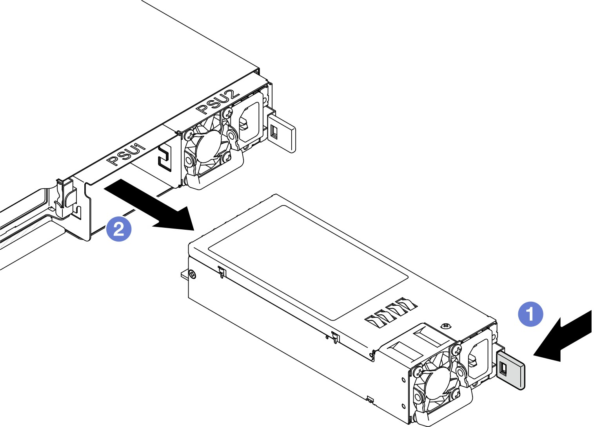
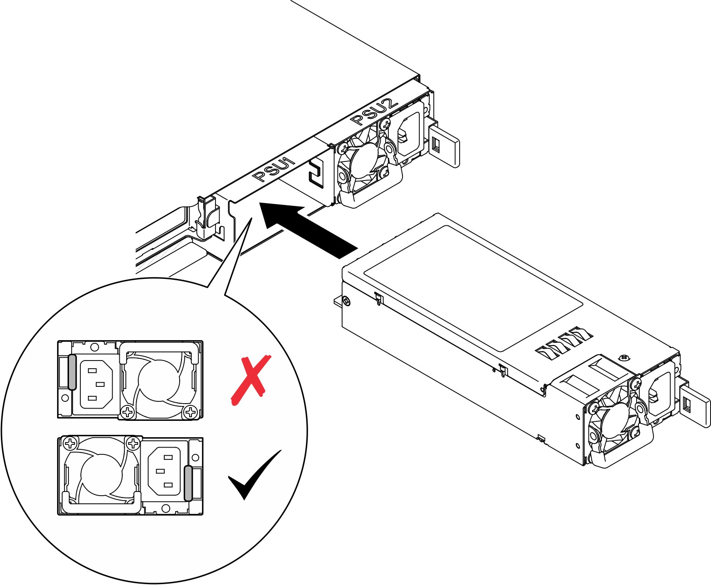

配图

图源：联想 ThinkSystem SR250 V3《卸下热插拔电源模块单元》图 1，https://pubs.lenovo.com/sr250-v3/zh-CN/remove_hot_swap_power_supply；步骤 1 朝手柄方向按释放滑锁，步骤 2 拉动手柄，把电源模块从机箱中取出。图中可见冗余的 PSU1 / PSU2 并排槽位。

图源：联想 ThinkSystem SR250 V3《安装热插拔电源模块单元》图 2，https://pubs.lenovo.com/sr250-v3/zh-CN/install_hot_swap_power_supply；抓住手柄把电源滑入插槽直至咔嗒固定。圆形放大图标明进线口与风扇的正误朝向：进线口朝上的放法打叉，风扇与进线口处于来源所示正确方位时打勾。正文还要求电源模块上的标签朝上。
结构原理
本节所有数字只写来源里给出的；来源没有就写「来源未给出」，不估算、不换算成看似精确的值。
堆叠方案
按「从机箱后部面板到机内电源背板」写，插入方向由外向内。
| 层级 | 零件 | 材料 | 厚度/尺寸 | 固定方式 | 依据 |
|---|---|---|---|---|---|
| L1（最外） | 交流电源线及其接头；戴尔另有手柄上的线缆紧固带 | 未注明 | 来源未给出线规 | 先从电源模块上断开，再从紧固带上取下（戴尔卸下前提） | 戴尔 R740xd 卸下页前提 2；戴尔知识库步骤 1 与零件表「电源设备线缆接头」 |
| L2 | 释放闩锁（戴尔 R740xd 写「桔色释放闩锁」；知识库写「免工具闩锁」。联想写「释放滑锁」「解锁卡扣」，并注明颜色不影响可维护性） | 未注明 | 来源未给出行程 | 朝手柄按下后才能抽出；推入到位后卡入 | 联想卸下步骤 2、安装注；戴尔卸下步骤、安装步骤 |
| L3 | 电源模块手柄与模块壳体（含面板进线口和风扇口） | 未注明 | 来源未给出模块长宽高或功率数值（戴尔要求功率以 PSU 标签为准） | 手持手柄抽插；模块在槽内滑动 | 联想、戴尔卸下/安装步骤与插图 |
| L4 | 电源槽 / 电源托架，以及空槽时的填充件 | 未注明 | 来源未给出槽深 | 联想：按填充件上的滑锁后把填充件拉出。戴尔有单独的挡片卸下/安装章节（本页未展开尺寸） | 联想安装步骤「如果安装了 PSU 填充件」 |
| L5（最内） | 模块后端与机内电源背板的连接器（戴尔知识库零件表单独标出「连接器」） | 未注明 | 来源未给出针数、电流或连接器型号 | 模块完全推入后盲插对接；不另接线 | 戴尔知识库零件表第 4 项「连接器」；两家安装步骤「滑入直至固定/闩锁卡入」 |
剖面示意：
flowchart LR 线缆["L1 交流线 + 紧固带"] --> 闩锁["L2 释放闩锁"] 闩锁 --> 手柄["L3 手柄与电源模块"] 手柄 --> 槽["L4 电源槽 / 填充件"] 槽 -->|"推到位盲插"| 背板["L5 电源背板连接器"]
零件清单
| 零件 | 数量 | 功能 | 材料 | 依据 |
|---|---|---|---|---|
| 热插拔电源模块 | 联想插图为 PSU1 与 PSU2 两个槽；具体配置看来源机型。戴尔：冗余系统有两只，类型和最大输出功率须相同 | 供电；可在来源允许的条件下抽出更换 | 未注明 | 联想图 1；戴尔安装前提 2 |
| 释放滑锁 / 免工具闩锁 | 每只模块 1 个（按插图与步骤） | 防止模块被直接拉出；按下后才允许滑动 | 未注明 | 联想「朝手柄方向按释放滑锁」；戴尔「按压桔色释放闩锁」 |
| 手柄 | 每只模块 1 个 | 抽插着力点；戴尔还在手柄上使用紧固带固定电源线 | 未注明 | 联想、戴尔步骤与知识库零件表第 5 项 |
| 线缆紧固带 | 来源未给出数量 | 把已插入的电源线留在手柄附近，避免挣脱 | 未注明 | 戴尔 R740xd 卸下前提、安装后续「请使用紧固带固定电缆」 |
| PSU 填充件 / 挡片 | 空槽时使用，数量来源未给出 | 挡住空槽 | 未注明 | 联想安装页；戴尔手册目录有「卸下电源装置挡片」 |
| 后端连接器 | 来源未给出 | 与机内电源背板盲插 | 未注明 | 戴尔知识库零件表「连接器」 |
| 电源状态指示灯 | 来源未给出灯数 | 戴尔：变为绿色表示电源设备正常工作 | 未注明 | 戴尔 R740xd 安装后续步骤注 |
装配顺序
卸下（联想 SR250 V3）：
- 在服务器后部找到热插拔电源模块，断开该模块上的电源线。
- 朝手柄方向按释放滑锁，再小心拉动手柄，把模块从机箱中取出。
- 随后安装替换单元或填充件。指南注明：带有解锁卡扣的 PSU 才是热插拔 PSU；解锁卡扣的颜色不会影响可维护性。
安装（联想 SR250 V3）：
- 准备安装的电源必须与已安装的电源相同；否则卸下所有现有电源，全部换成相同的。机箱内电源必须具有相同的功率、供应商和部件号（或备用部件号）。
- 若槽内是填充件：按填充件上的滑锁，把填充件拉出。
- 确保电源模块上的标签朝上，抓住手柄滑入插槽，直至咔嗒一声固定到位。插图另外标出进线口朝向的正误。
卸下（戴尔 R740xd；交流和直流 PSU 步骤相同）：
- 系统正常运行需要一只电源。在电源冗余系统中，系统开机时每次只卸下并更换一只 PSU。
- 断开要卸下的那只电源上的电源线，再从 PSU 手柄上的紧固带上取下线缆。若可选缆线固定臂妨碍操作，打开闩锁并提起。
- 按压桔色释放闩锁，并用 PSU 手柄把 PSU 滑出系统。
- 随后安装 PSU 或 PSU 挡片。
安装（戴尔 R740xd）：
- 冗余系统中的两只 PSU 类型须相同，最大输出功率也须相同；瓦特数标在 PSU 标签上。
- 将 PSU 滑入机箱直至完全固定，并使释放闩锁卡入到位。
- 如先前打开了电缆固定臂，重新锁定。把电源电缆接到 PSU 并插入插座，用紧固带固定电缆。
- 安装、热插拔或热添加后，给系统留出几秒钟来识别电源并确定状态。在新的 PSU 已被查找到并已启用之前，不要卸下另一只 PSU。电源设备状态指示灯变为绿色，表示正常工作。
戴尔知识库补充了同一机构下的通用说法：若服务器在冗余模式下配置了两个电源（默认设置），可以在不关闭服务器的情况下移除其中一只，剩下的电源继续供电；并写「通常，所有带有琥珀色移除工具的组件均可在服务器已开机的情况下被断开电源」。带载拔插只按这些已写明的条件执行，不推广到来源没有写的单电源系统。
两家都警告：不要拆开电源外壳。联想 S035：贴有该标签的部件内部有危险电压，没有可维护零件。设备可能有多根电源线，要使设备彻底断电，须从电源上拔下所有电源线。
受力与运动分析
- 受力路径：抽出力经过手柄，但只有先按下释放闩锁后，模块才能沿槽向外滑动；后端盲插连接器在滑动开始时分离。推入时，手把模块沿槽推到终点，闩锁卡入，连接器完成对接。交流线的拉拔力应由插头和紧固带承担，而不是作用在盲插端子上。来源未给出插入力、保持力或端子额定电流。
- 运动关系：模块相对电源槽主要是直线抽插。闩锁相对壳体有一个按压释放的短行程，到位后挡住模块退出。没有来源把这个闩锁写成硬盘托架那种合上即把接口再推入一截的凸轮手柄。
- 失效风险：方向装反时可能插不进或损坏连接器，所以联想用标签朝上和进线口朝向图来防呆。混用不同功率、供应商或部件号的电源，联想明确要求整组更换为相同模块。戴尔强调：新电源还没被系统识别并变绿之前就拔掉另一只，冗余可能尚未建立。推断（来源未测）：只按手柄不按闩锁硬拔，可能掰坏闩锁或带着未分离的连接器受力。
设计要点与参数
| 要点 | 内容 | 依据 |
|---|---|---|
| 何为热插拔电源 | 联想：带有解锁卡扣的 PSU 是热插拔 PSU；卡扣颜色不影响可维护性 | 联想卸下/安装页注 |
| 释放件 | 联想：朝手柄按释放滑锁。戴尔 R740xd：按压桔色释放闩锁。知识库：按下免工具闩锁 | 各页步骤 |
| 保持 | 推入直到完全固定，释放闩锁卡入或咔嗒到位 | 联想安装步骤；戴尔安装步骤 |
| 盲插连接器 | 戴尔知识库零件表列出「连接器」，位于模块插入方向的内侧。针数、型号来源未给出 | 戴尔知识库零件表 |
| 带载更换条件 | 戴尔：冗余系统开机时一次只更换一只；须先断开该模块交流线；新模块被识别、启用且状态灯变绿前，不要卸下另一只。单电源能否带电拔出：来源要求系统至少需要一只电源，未允许把最后一只在开机时卸下 | 戴尔 R740xd 卸下警告与安装注；知识库摘要 |
| 模块一致性 | 联想：相同功率、供应商和部件号（或备用部件号）。戴尔：相同类型和相同最大输出功率，瓦特数看标签 | 两家安装前提 |
| 线缆固定 | 戴尔：连接时使用紧固带 | 戴尔安装后续警告 |
| 模块外形尺寸、重量、效率、销图 | 来源未给出 | 未把未打开的 CRPS 规格书数字写入本篇 |
优缺点
优点
- 电源作为后部模块更换，不必打开上盖或拆系统板。
- 释放闩锁和手柄分工明确：闩锁负责误拔保护，手柄负责抽插。
- 冗余加上「一次只换一只、等灯变绿」的规则，可以把更换放在系统运行时完成。
- 标签朝上、进线口朝向图、相同功率/供应商/部件号，降低装反和混用风险。
缺点 / 代价
- 必须有电源背板、滑槽和填充件，结构比一只固定电源加线缆更复杂。
- 带载拔插不是无条件的：交流线要先拔，且系统里还要留下已工作的另一只电源。
- 来源禁止用户拆电源外壳，模块内部不可现场维修。
- 两只电源必须匹配，备件管理比「任意一块同类瓦数」更严（联想还要求供应商和部件号相同）。
可借鉴点
- 做热插拔电源时，把「机械保持」和「电气允许拔插」分开写：闩锁解决模块掉出，冗余和灯色解决能不能在带电时拔。
- 先断该模块的交流输入，再按闩锁抽出，避免在交流插头还连着时甩动模块。
- 用填充件堵住空槽，用朝向标和标签朝上防止装反；不要只靠安装者目测。
- 在说明书里写清：新模块被识别之前，禁止再动另一只。不要把硬盘托架的等待一分钟或两分钟散热规则抄到电源上，除非该电源手册自己写了同样的时间。
与库中相似案例对比
| 对比项 | 本案例（热插拔服务器电源） | 热插拔硬盘托架：前手柄锁止、托盘滑入并把接口盲插到背板 | 电动工具电池包：滑轨插入与按压锁舌（得伟拆解） | Mac Pro 2019 旋转把手外壳锁与免工具模块锁 |
|---|---|---|---|---|
| 模块功能 | 交流-直流电源 | 存储盘 | 工具电池 | 工作站内部模块与外壳 |
| 连接器 | 电源背板盲插；先拔该模块交流线。针数来源未给出 | 硬盘接口对背板或中面板（SATA/SAS/NVMe，看来源机型） | 电池电触点 | 见该案例，不是本篇电源背板 |
| 保持锁 | 释放闩锁（戴尔示例为桔色免工具闩锁）卡入；再用手柄抽插 | 合上托盘/凸轮手柄，群晖还可钥匙锁把手 | 按压锁舌 | 旋转把手与模块锁 |
| 带载拔插 | 仅在来源写明的冗余条件下，一次换一只，并等新电源被识别 | 按各存储手册：有的允许开机热插拔，并另有空槽散热时限 | 通常先停机或按工具手册，不套用本篇冗余规则 | 不套用本篇 PSU 规则 |
| 分类取舍 | 06：整机可换电源模块 | 06：整机可换存储模块，行程更短，锁是前手柄不是电源闩锁 | 04：电池包锁舌 | 04：外壳与模块互锁 |
相关案例
- 热插拔硬盘托架：前手柄锁止、托盘滑入并把接口盲插到背板
- 电动工具电池包：滑轨插入与按压锁舌（得伟拆解）
- Mac Pro 2019 旋转把手外壳锁与免工具模块锁
- Framework Desktop 免工具面板与标准件模块化
- 分类索引：拆解与可维修
来源与核实记录
- 主来源：联想 ThinkSystem SR250 V3：卸下热插拔电源模块单元（联想 Docs 中文。释放滑锁朝向手柄、拉手柄取出、解锁卡扣定义与颜色说明、安全警告）
- 补充来源 1：安装热插拔电源模块单元（同属联想。相同功率/供应商/部件号、填充件滑锁、标签朝上、推入至咔嗒、进线口朝向图）
- 补充来源 2：戴尔 PowerEdge R740xd：卸下电源设备单元（Dell 独立机构。冗余时开机一次只换一只、断开电源线并脱离手柄紧固带、按压桔色释放闩锁、用手柄滑出）
- 补充来源 3：戴尔 PowerEdge R740xd：安装电源设备（同属戴尔。类型与最大输出功率须相同、滑入至闩锁卡入、紧固带、等待识别且状态灯变绿）
- 补充来源 4：戴尔知识库：PowerEdge 如何卸下或更换电源装置（同属戴尔。冗余下可不开机拆除其中一只；零件表：免工具闩锁、线缆接头、电源装置、连接器、手柄）
- 核实：2026-11-22 打开联想两页并下载官方插图；用页面抓取打开戴尔手册两页和知识库页。未把未成功打开的 CRPS 规格或浪潮白皮书写入参数。